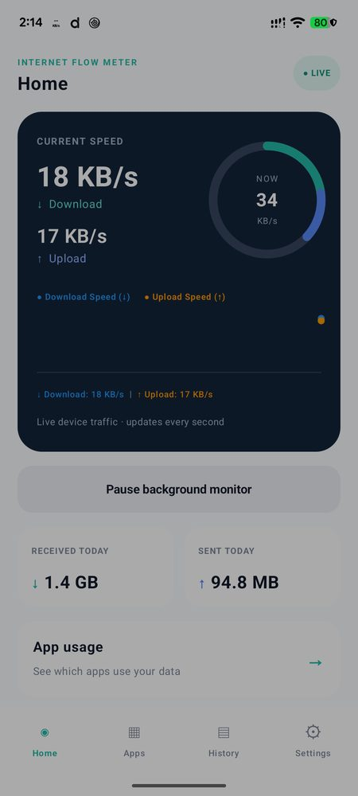

Internet Flow Meter
See your connection clearly: live speed, daily usage and which apps use your data.
What it does
- Live download and upload speed in the status bar
- Optional on-screen speed overlay you can drag anywhere
- Choose whether the speed shows on the lock screen and in the notification shade
- Data used today, split into received and sent
- 30-day history with a day-by-day drill-down
- Per-app data usage with graphs
- Daily data limit alerts (up to 10 GB)
Private by design
No account, no ads, no tracking. All data stays on your phone and is never uploaded.
Details
- Platform: Android 8.0 (API 26) and newer
- Package:
com.tanzeel.internet_flow_meter - Price: free
